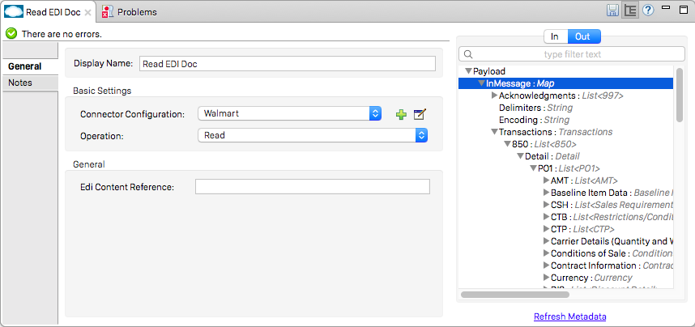

EDIFACT Module
The EDIFACT Module provides message reading, validation, and writing capabilities to communicate with trading partners using EDIFACT EDI exchanges.
Included in the EDIFACT Module are the following capabilities:
-
EDIFACT message reading, validation, and writing
-
Integration with DataSense and DataWeave
-
The ability to define your own schemas or customize the base EDIFACT schemas
-
Support for many common EDIFACT versions out of the box
To get started using the connector, follow these steps:
-
Install the EDIFACT connector.
-
Create schemas to describe your EDIFACT messages according to your implementation.
-
Configure the EDIFACT Module for your trading partner according to your implementation convention.
-
Use the EDIFACT module inside Mule flows.
This page helps you learn how to do each of these steps.
Installation
-
In Anypoint Studio, click the Exchange icon in the Studio taskbar.
-
Click Login in Anypoint Exchange.
-
Search for the connector and click Install.
-
Follow the prompts to install the connector.
When Studio has an update, a message displays in the lower right corner, which you can click to install the update.
Using the EDIFACT Module via Maven
To use the EDIFACT Module in conjunction with Maven, see Mule EDI Anypoint EDIFACT Connector.
EDI Schema Language
The EDIFACT Module uses a YAML format called ESL (for EDI Schema Language) to represent EDI schemas. Basic ESLs define the structure of EDI messages in terms of structures (messages, in EDIFACT terminology), groups (segment groups, in EDIFACT), segments, composites, and elements. ESLs for the EDIFACT D.93A, D.95B, D.96A, D.97A, D.98B, D.99A, D.99B, D.00A, D.01B, D.02A, and D.03B versions are included out of the box.
To configure the EDIFACT Module according to your implementation convention, define an overlay schema. An overlay schema is a special form of ESL that allows you to modify a base schema, such as an EDIFACT D.98B ORDERS schema, with your specific conventions. (You don’t need an overlay schema if you’re using the structure defined by the standard, but most EDI exchanges modify the base definitions in an implementation convention)
If you wish, you can also define your own schemas from scratch. See the EDI Schema Language Reference for more details.
| YAML uses a combination of lists and sets of key-value pairs. Order of values is not important, as long as required items are present. Quotes (either single or double quotes) are used around values which may consist of digits but are meant to be interpreted as strings (since otherwise the YAML parser treats the values as numbers). Indentation is used to show the nesting of lists. |
For readability, the ESL structures shown here define all simple key-value pairs before any lists that are part of the same definition.
Defining Your Implementation Convention with an Overlay Schema
To specify a schema according to your implementation convention, you can follow the following process:
-
Create an "overlay" schema which imports the base schema you want to customize - for example, EDIFACT D.98B ORDERS.
-
Customize the overall structure - segment usage, positions, groups, and counts.
-
Customize segments - including usage and counts.
Overlay schemas are very similar in structure to a complete schema definition, but instead of providing all the details of the schema structure, they only list changes. The schemas specify the way implementation conventions are used with a particular trading partner to extend and customize the standard.
For example, here’s the start of a sample overlay schema modifying the basic EDIFACT D.98B ORDERS definition. This sample customizes the "PAI" segment and specifies that it is unused - thereby ensuring that it doesn’t show up in the mapping structures in Studio.
form: EDIFACT
version: 'd98b'
imports: [ '/edifact/d98b/ORDERS.esl' ]
structures:
- idRef: 'ORDERS'
name: Purchase Order
heading:
- { idRef: 'PAI', position: '0040', usage: U }Structure Overlay
A structure overlay details modifications to the base schema definition of an EDIFACT message. Most often these modifications take the form of marking segments or groups in the base definition as unused, but any usage or repetition count change is allowed. Here’s the form taken by a structure overlay:
- idRef: 'ORDERS'
heading:
- { idRef: 'PAI', position: '0040', usage: U }
- { idRef: 'IMD', position: '0060', usage: U }
- groupIdRef: 'Segment group 15'
position: '0560'
items:
- { idRef: 'HAN', position: '0570', usage: U }
- { idRef: 'MEA', position: '0580', usage: U }
- { idRef: 'FTX', position: '0590', usage: U }The modifications in this example specify that the PAI and IMD segments of the standard ORDERS heading are not being used, along with the selected segments in Segment group 15.
The key-value pairs at the structure level are:
| Key | Description |
|---|---|
idRef |
The ID for the message being modified |
name |
The message name (optional) |
heading, detail, summary |
List of segment and group modifications within each section of the structure (optional, each is only used when there are modifications to that section) |
The lists of segment modifications for the different sections of the structure (heading, detail, summary) all use the same structure. Each item in the list is either a segment reference or a group definition. Segment references are shown using a compact YAML syntax where the values for each reference are given as comma-separated key-value pairs enclosed in curly braces. The values are:
| Key | Description |
|---|---|
idRef |
The referenced segment ID (optional, verified if provided but otherwise ignored – the position value is used to uniquely identify segments within the section) |
position |
The segment position within the message section |
usage |
Usage code, which may be M for Mandatory, O for Optional, C for Conditional, or U for Unused (optional, base definition value used if not specified) |
count |
Maximum repetition count value, which may be a number or the special value '>1' meaning any number of repeats (optional, base definition value used if not specified) |
Group overlays are shown in expanded form, with key-value pairs on separate lines. The values in a group definition are:
| Key | Description |
|---|---|
groupIdRef |
The referenced segment group id (optional, verified if provided but otherwise ignored – the position value is used to uniquely identify a group within a section) |
position |
The group position within the message section |
usage |
usage code, which may be M for Mandatory, O for Optional, C for Conditional, or U for Unused |
count |
Maximum repetition count value, which may be a number or the special value `>1 `meaning any number of repeats (optional, base definition value used if not specified) |
items |
List of segments (and potentially nested loops) making up the loop |
Segment Overlays
A segment overlay again details modifications to the base schema definition. Most often these modifications take the form of marking elements or composites in the base definition as unused, but any usage or repetition count change is allowed. Here are some sample segment overlays:
segments:
- { idRef: FTX, trim: 20 }
- idRef: LIN
items:
- { position: 40, usage: U }
- { idRef: ALC, trim: 30 }
- idRef: PCI
items:
- { position: 20, usage: U }
- { position: 40, usage: U }The above example uses the compact form for segment modifications that only involve a truncate, while modifications that make changes to individual values are expressed in expanded form. As with all the other YAML examples, the two forms are actually equivalent and can be used interchangeably.
The key-value pairs in a segment overlay are:
| Key | Description |
|---|---|
idRef |
Segment identifier |
trim |
Trim position in segment, meaning all values from this point on are marked as unused (optional) |
items |
List of individual value modifications |
The items list references values in the segment by position. The values for these references are:
| Key | Description |
|---|---|
position |
The value position within the segment |
name |
The name of the value in the segment (optional, base definition value used if not specified) |
usage |
Usage code, which may be M for Mandatory, O for Optional, C for Conditional, or U for Unused (optional, base definition value used if not specified) |
count |
Maximum repetition count value, which may be any number or the special value |
Determining the EDIFACT Schema Location
To use DataSense views of input and output EDI data you need to know the locations of the schemas in your project. If you’re using the out of the box EDIFACT schemas and not customizing anything, the schema location follows the pattern "/edifact/{version}/{message}.esl", so for the D.98B version of the ORDERS message your schema location is "/edifact/d98b/ORDERS.esl". You can find these schemas bundled with the connector in the file edi-schemas-edifact-<VERSION>.jar.
If you’re creating a custom implementation convention, you should put your schemas under a directory in src/main/app and refer to the location using ${app.home}. For example, if you’ve put your ORDERS schema under src/main/app/mypartner/ORDERS.esl, your schema location is "${app.home}/mypartner/ORDERS.esl".
Configuring the EDIFACT Module
After you install the connector and configure your schema customizations (if any), you can start using the connector. Create separate configurations for each implementation convention.
[tab,title="Studio Visual Editor"] .... Follow these steps to create a global EDI module configuration in a Mule application: . Click the *Global Elements* tab at the base of the canvas, then click *Create*. . In the *Choose Global Type* wizard, use the filter to locate and select, *EDIFACT Module*, and click *OK*. + image:edi-choose-global-type.png[edi-choose-global-type] + . Configure the parameters according to the connector reference. . Click *OK* to save the global connector configurations. . Return to the *Message Flow* tab in Studio. .... [tab,title="XML Editor or Standalone"] .... First, ensure that you have included the appropriate EDI namespace in your configuration file. For EDIFACT, the namespace and schema location are: [source, yaml, linenums] ---- http://www.mulesoft.org/schema/mule/edifact-edi http://www.mulesoft.org/schema/mule/edifact-edi/1.0/mule-edifact-edi.xsd ---- Follow these steps to configure a EDIFACT module in your application. . Create a global EDIFACT configuration outside and above your flows. + [source, xml, linenums] ---- <edifact-edi:config name="ediTx" interchangeIdQualifierSelf="16" interchangeIdSelf="102096559PROD" interchangeIdQualifierPartner="01" interchangeIdPartner="PARTNER"> <edifact-edi:schemas> <edifact-edi:schema>/edifact/d98b/ORDERS.esl</edifact-edi:schema> <edifact-edi:schema>/edifact/d98b/ORDRSP.esl</edifact-edi:schema> </edifact-edi:schemas> </edifact-edi:config> ---- + . Configure the connector according to your implementation convention using the guide below. ....
After you set up a global element for your EDIFACT module, configure the schemas, acknowledgements, IDs, and the parser options. A reference for these options is located in the module reference.
Setting Your Schema Locations
| Currently, you can only configure schema locations in the Anypoint Studio XML view. |
Using the schema locations determined above, switch to the XML view in Studio by clicking Configuration XML. Modify your EDIFACT module configuration to include a list of all the schemas you wish to include by adding an edi:schema element for each document type:
<edifact-edi:config name="MyTradingPartner" doc:name="EDI" interchangeIdQualifierSelf="01" interchangeIdSelf="ABCDEFG" groupIdSelf="ABC123" interchangeIdQualifierPartner="01" interchangeIdPartner="HIJKLMN" groupIdPartner="DEF456">
<edifact-edi:schemas>
<edifact-edi:schema>/edifact/d98b/ORDERS.esl</edifact-edi:schema>
<edifact-edi:schema>/edifact/d98b/ORDRSP.esl</edifact-edi:schema>
</edifact-edi:schemas>
</edifact-edi:config>When the connector is processing an input or output message, it first looks for a match among the configured schemas. If it doesn’t find a match with one of these, it tries to load a schema from the classpath, using the path construction described at the start of this section. So you can work with messages that are not included in the configuration, but only the data structures for these will not show up in DataSense within Anypoint Studio.
Setting Your Interchange IDs
You can also configure the interchange and group identifiers and qualifiers for you and your trading partner on the EDIFACT module configuration.
The "Self identification" parameters identify your side of the trading partner relationship, while the "Partner identification" parameters identify your trading partner. The values you set are used when writing EDI messages to supply the sender interchange identifier, interchange identifier qualifier, group application identifier, and group identifier qualifier, and are verified in receive messages. If you don’t want to restrict incoming messages you can leave these blank, and set the values for an outgoing message in the write operation or in the actual outgoing message. Values set in the write operation override the connector configuration, and values set directly in the message override both the connector configuration and any values set in the write operation.
Understanding the Mule Message Structure for EDIFACT Documents
The connector enables reading or writing of EDIFACT documents into or from the canonical EDI message structure. This structure is represented as a hierarchy of Java Maps and Lists, which can be manipulated using DataWeave or code. Each transaction has its own structure, as defined in the schemas, as outlined above.
The message itself contains the following keys:
| Key name | Description |
|---|---|
Delimiters (optional) |
The delimiters used for the message (set based on the last interchange processed by a read operation). If set for a write operation, this override the values in the module configuration. The characters in the string are interpreted based on position, in the following order: (data separator), (component separator), (repetition separator, or ' ' if none), (segment terminator), (release indicator). |
Errors (read only) |
A list of errors which are associated with the input as a whole, or with interchanges with no messages. (See the EdifactError structure description in the Reading and Validating EDI Messages section below.) |
FunctionalAcksGenerated (read only) |
A list of CONTRL acknowledgments that were generated by the module during the read operation. To send an acknowledgement, see the Sending Acknowledgements section below. |
Group (write only) |
Map of UNG group header segment values used as defaults when writing groups. (Not yet implemented in the 1.0 version.) |
Interchange (write only) |
Map of UNB interchange header segment values used as defaults when writing interchanges. |
Messages |
A hierarchy of the messages which were read by the module during a read operation, or which are to be sent by the module during a write operation. The value of this top-level key is a map with standard versions as keys, in the form |
Individual transaction sets have their own maps, with the following keys:
| Key name | Description |
|---|---|
Detail |
Map of segments or segment groups from the detail section of the transaction set. Values are maps for segments or groups which occur at most once, lists of maps for values which may be repeated. |
Errors (read only) |
A list of errors which are associated with the input as a whole, or with interchanges with no messages. (See the EdifactError class description in the Reading and Validating EDI Messages section below.) |
Group |
Map of UNG group header segment values, when groups are used. When reading, this map is the actual data from the enclosing group (a single map linked from all messages in the group). When writing, these values are used for optionally creating an enclosing group (gathering message with the same interchange and group values into a single group, regardless of whether the actual maps are the same or not). Values not populated in this map default to the values from the group map at the message level. |
Heading |
Map of segments or segment groups from the heading section of the transaction set. Values are maps for segments or groups which occur at most once, lists of maps for values which may be repeated. |
Id |
Message ID, which must match the key of the containing message list. |
Interchange |
Map of UNB interchange header segment values. When reading a message, this map is the actual data from the enclosing interchange (a single map linked from all transaction sets in the interchange). When writing a message, these values are used for creating the enclosing interchange (gathering transactions with the same interchange values into a single interchange, regardless of whether the actual maps are the same or not). Values not populated in this map, default to the values from the interchange map at the message level. |
MessageHeader |
Map of UNH message header segment values. This gives the actual header data for a read operation, and allows you to provide overrides for configuration settings for a write operation. |
Name |
Message name. |
Summary |
Map of segments or loops from the summary section of the transaction set. Values are maps for segments or loops which occur at most once, lists of maps for values which may be repeated. |
Reading and Validating EDI Messages
To read an EDIFACT message, search the palette for EDIFACT EDI, and drag the EDIFACT module into a flow. Then, go to the properties view, select the connector configuration you created above and select the Read operation. This operation reads any byte stream into the structure described by your EDI schemas.
The EDIFACT module validates the input when it reads it in. Validation includes checking the syntax and content of interchange envelope segments UNA/UNB and UNZ, optional group envelope segments UGH and UNE, as well as the actual messages. Normally errors are both logged and entered in the receive data map, as well as accumulated and reported in CONTRL acknowledgment messages. All accepted messages (whether error free or with non-fatal errors) are passed on for processing as part of the output message Map. Errors in reading the input data results in exceptions being thrown.

Error data entered in the receive data map uses the EdifactError class, a read-only JavaBean with the following properties:
| Property | Description |
|---|---|
segment |
The zero-based index within the input of the segment causing the error |
fatal |
Flag for a fatal error, meaning the associated message, group, or interchange was rejected as a result of the error |
errorCode |
EDIFACT syntax error code |
errorText |
Text description of the error |
Error data is returned by the read operation as optional lists with the "Errors" key at every level of the data structure. At the message level, this list contains non-fatal errors encountered during the parsing of that message. At the interchange level, this list contains errors (both fatal and non-fatal) for messages with fatal errors. At the root level of the read, this list contains both interchange errors and errors for messages included in interchanges with no valid messages.
Writing EDIFACT Messages
To write an outgoing message, you can construct an outgoing EDIFACT message according to the structure as defined above. For example, this sample creates an outgoing EDIFACT message which is written to a file.
...
<edifact-edi:write config-ref="MyTradingPartner" doc:name="Send ORDERS"/>
<file:outbound-endpoint responseTimeout="10000" doc:name="File" path="output" outputPattern="ack.edi"/>Sending Acknowledgements
Sending acknowledgments is the same as writing any other EDIFACT message, except you set the messages list to the acknowledgements that were generated during the read operation. For example:
<edifact-edi:read config-ref="Walmart" doc:name="Read EDI Doc"/>
...
<dw:transform-message doc:name="Transform Message">
<dw:input-payload doc:sample="InMessage.dwl"/>
<dw:set-payload><![CDATA[%dw 1.0
%output application/java
---
{
Messages: {
D96A: {
CONTRL: payload.FunctionalAcksGenerated
}
}
}]]></dw:set-payload>
</dw:transform-message>
<set-payload value="#[ ['Transactions' : ['CONTRL' : payload.FunctionalAcksGenerated] ] ]" doc:name="Create outgoing message"/>
<edifact-edi:write config-ref="MyTradingPartner" doc:name="Send CONTRL Ack"/>
<file:outbound-endpoint responseTimeout="10000" doc:name="File" path="output" outputPattern="ack.edi"/>Limitations
-
EDIFACT packages (containers for binary data) are not supported, and cause errors if you attempt to use them.
-
EDIFACT interactive exchanges (using UIB header segment and UIZ trailer segment) are not supported.
-
Code values are not currently verified for either reading or writing.
-
EDIFACT dependency notes are not currently enforced for either reading or writing.
-
EDIFACT groups are not supported yet.